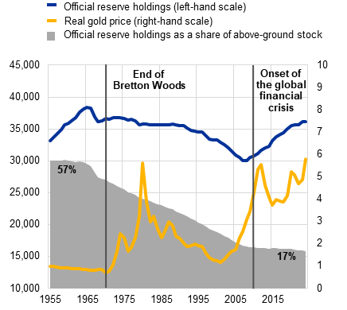
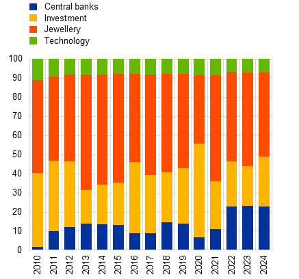
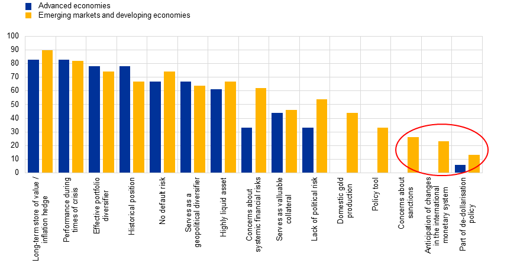
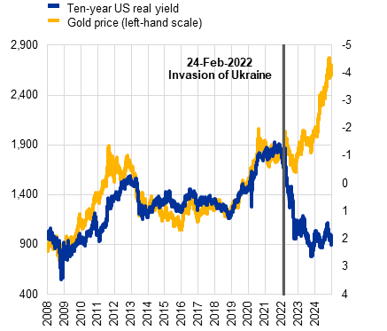
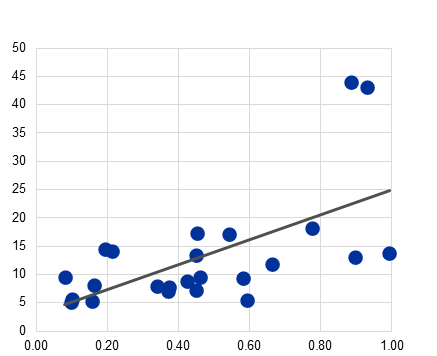

Gold demand: the role of the official sector and geopolitics
Published as part of the The international role of the euro, June 2025.
In 2024 gold prices reached historical highs, while holdings of gold reserves by central banks stood at levels close to those last seen in the Bretton Woods era. Adjusted for inflation, real gold prices in 2024 surpassed their previous peak seen during the 1979 oil crisis. Meanwhile, gold reserves held by central banks stand at levels close to those last seen in the Bretton Woods era, although they now account for a far smaller share of total gold supply (Chart A, panel a).[1] This stockpile, together with high prices, made gold the second largest global reserve asset at market prices in 2024 – after the US dollar (Chart 7 of the main report).
The demand for gold by central banks remained at record highs in 2024, accounting for more than 20% of global demand, in contrast to around one-tenth on average in the 2010s.[2] Gold demand for monetary reserves surged sharply in the wake of Russia’s full-scale invasion of Ukraine in 2022 and has remained high. However, gold purchases for jewellery consumption and investment continued to account for the bulk of global gold demand. In 2024 the decline in demand for jewellery consumption, particularly in China, was offset by higher demand for investment. The combined share of both categories remained at 70% of the global demand for gold (Chart A, panel b).
Chart A
Historically high gold prices, with central banks accounting for more than one-fifth of global gold demand
a) Gold price and official gold reserves | b) Gold demand by sector |
|---|---|
(left-hand scale: tonnes; right-hand scale: index, 1955=1) | (percentages) |
 |  |
Sources: OMFIF, World Gold Council, Haver and ECB staff calculations.
Notes: In panel a), the latest observations are for 31 December 2024. The nominal gold price is deflated using the US consumer price index. The vertical lines indicate the end of the Bretton Woods system in 1971, when convertibility of the US dollar into gold was suspended, and the onset of the global financial crisis in 2007. In panel b), “jewellery” denotes gold purchases driven by consumption for making gold jewellery. “Investment” refers to purchases of gold bars, coins and exchange-traded funds (ETFs). “Technology” denotes gold used in industrial applications. ”Central banks” denotes net purchases by central banks and selected international financial institutions such as the IMF or the BIS (for further details see the guidance note published by the World Gold Council in 2018).
Survey data suggest that gold is held by central banks primarily for diversification purposes but also to hedge against geopolitical risk (Chart B). A survey of almost 60 central banks conducted by the World Gold Council between February and April 2024 identified the following three key drivers of central banks’ gold holdings: (i) a long-term store of value and an inflation hedge, (ii) (good) performance during times of crisis, and (iii) an effective portfolio diversifier. Additionally, respondents pointed to default risks, geopolitical diversification and political risk as factors influencing their holdings. Overall, the responses indicate that gold is valued by reserve managers primarily as a portfolio diversifier to hedge against economic risks, including inflation, cyclical downturns and defaults, and secondly as a hedge against geopolitical risk.[3]
Moreover, concerns related to sanctions and the possible erosion of the role of major currencies were cited by some central banks in emerging and developing economies. One out of four such central banks referred to “concerns about sanctions” or the “anticipation of changes in the international monetary system” as determinants of their investment exposure to gold. The recent accumulation of gold reserves by official institutions tends to be concentrated in very few countries.[4] Türkiye, India and China, for instance, top the list of the largest purchasers, jointly accumulating more than 600 tonnes of gold since the end of 2021.[5]
Chart B
Survey evidence on factors influencing the decision of central banks to hold gold
(percentages)

Sources: World Gold Council and ECB staff calculations.
Note: This survey includes all 57 central banks holding gold in 2024, of which 18 are located in advanced economies and 39 in emerging and developing economies.
There are further signs that geopolitical considerations influence decisions by central banks to invest in gold. Between 2008 and early 2022, gold prices were negatively correlated with real yields, providing a hedge against low nominal interest rates and/or high inflation. This correlation broke down after Russia’s full-scale invasion of Ukraine, suggesting that gold prices have been influenced by other factors, such as geopolitical risk (Chart C, panel a).[6] Recent research indicates that imposing financial sanctions is associated with increases in the share of central bank reserves held in gold. Notably, in five of the ten largest annual increases in the share of gold in foreign reserves since 1999, the countries involved faced sanctions in the same year or the previous year.[7] Chart C, panel b) also points to geopolitical considerations as a motive for diversification into gold since the onset of Russia’s full-scale invasion of Ukraine. Countries that are geopolitically close to China and Russia have seen more marked increases in the share of gold in their official foreign reserves since the last quarter of 2021.[8]
The future impact of persisting geopolitical tensions and the demand effect, driven by central banks, on gold prices is likely to depend on the stickiness of gold supply. It has been argued that gold supply has responded elastically to increases in demand in past decades, including through strong growth in above-ground stocks.[9] Therefore, if history is any guide, further increases in the official demand for gold reserves may also support further growth in global gold supply.
Chart C
Additional evidence of the importance of geopolitics in official gold demand
a) Shift in the correlation between gold prices and real long-term US interest rates | b) Correlation between geopolitical alignment and countries actively diversifying into gold since 2021 |
|---|---|
(left-hand scale: US dollar/troy ounce; right-hand scale, inverted: percentage) | (x-axis: index of geopolitical alignment; y-axis: percentage point change in the share of gold between Q4 2021 and Q4 2024) |
 |  |
Sources: World Gold Council, FRED, Federal Reserve Bank of St. Louis, Global Sanctions Database, SIPRI Arms Transfers Database, United Nations, IMF and ECB staff calculations.
Notes: In panel a), “Ten-year US real yield” indicates the market yield on inflation-indexed US Treasury securities with a ten-year constant maturity. The latest observations are for 31 December 2024. In panel b), active gold diversifiers are identified as countries that increased the share of gold in their official foreign reserves by more than the cross-country average change. The geopolitical index used in the chart measures the distance in 2022 of a country from China-Russia compared with the United States. A higher value indicates that a country is geopolitically closer to China-Russia than to the United States. See Special feature A, “Geopolitical fragmentation risks and international currencies”, in the 2023 edition of this report.
See OMFIF, “Gold and the New World Disorder”, 2024.
IMF data indicate a much slower increase since 2021. The difference can be explained by “unreported purchases” by central banks estimated by the World Gold Council. See the June 2023 edition of the International Role of the Euro for further details.
In a different survey of 73 central banks conducted by OMFIF between March and May 2024, respondents listed their primary purposes for holding gold as diversification (68%) and as a hedge against geopolitical risk (40%). See OMFIF, “Global Public Investor 2024”, 2024.
See Arslanalp, S., Eichengreen, B. and Simpson-Bell, C., “Gold as international reserves: A barbarous relic no more?”, Journal of International Economics, November 2023, for documentation of the key role of emerging markets in gold accumulation between the global financial crisis and 2021. In relation to this trend, gold has played an important role in the de-dollarisation policy implemented by Russia following its invasion of Crimea in 2014 and the application of western sanctions. More than half of the increase in official gold reserves has been accumulated by the central bank of Russia since 2014. For further information see: Kennedy, J., Grossfeld, E., Wolford, Z. and Kenchington, T., “Gold rush: How Russia is using gold in war time”, RAND Europe, 9 September 2024.
Based on data from the IMF, World Gold Council and ECB staff calculations.
In the chart, the nominal gold price is compared to the US real yield to capture the positive relationship with inflation (inflation hedge) and the negative relationship with the nominal interest rate (cost of holding unremunerated asset). These two factors have been commonly identified in the literature as drivers of gold prices. For a comprehensive review, see O'Connor, F., Lucey, B., Batten, J. and Baur, D., “The financial economics of gold — A survey”, International Review of Financial Analysis, 2015.
See Arslanalp, S., Eichengreen, B. and Simpson-Bell, C. (2023), ibid.
See Douglass, P., Goldberg, L.S. and Hannaoui, O.Z., “Taking Stock: Dollar Assets, Gold, and Official Foreign Exchange Reserves”, May 2024, for a similar study pointing to the same conclusion.
See OMFIF, “Gold and the New World Disorder”, 2024.